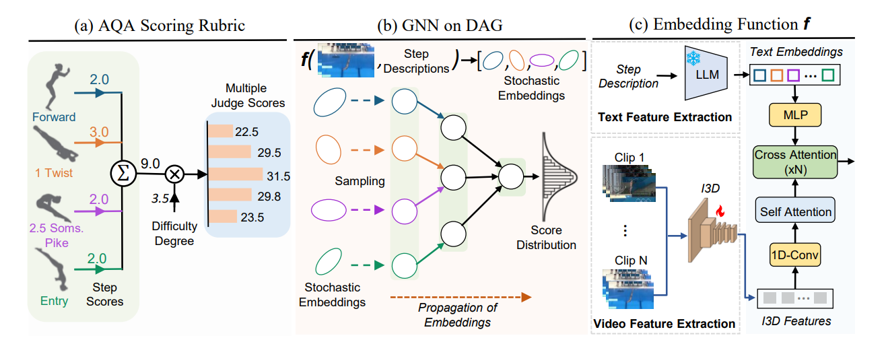

RICA2: Rubric-Informed, Calibrated Assessment of Actions ECCV 2024
- Abrar Majeedi
- Viswanatha Reddy Gajjala
- Satya Sai Srinath Namburi GNVV
- Yin Li University of Wisconsin - Madison
{kind=link}
Abstract
The ability to quantify how well an action is carried out, also known as action quality assessment (AQA), has attracted recent interest in the vision community. Unfortunately, prior methods often ignore the score rubric used by human experts and fall short at quantifying the uncertainty of the model prediction. To bridge the gap, we present RICA2 -- a deep probabilistic model that integrates score rubric and accounts for prediction uncertainty for AQA. Central to our method lies in stochastic embeddings of action steps, defined on a graph structure that encodes the score rubric. The embeddings spread probabilistic density in the latent space, and allow our method to represent model uncertainty. The graph encodes the scoring criteria, based on which the quality scores can be decoded. We demonstrate that our method establishes new state of the art on public benchmarks including FineDiving, MTL-AQA, and JIGSAWS, with superior performance in score prediction and uncertainty calibration.
Method
Our method aims to assess the quality of actions within input videos by leveraging the structure of the action and human-designed scoring rubrics. Action in a video comprises a series of key steps, which are encoded as latent stochastic embeddings. These individual embeddings are aggregated to calculate a final quality score based on a pre-specified rubric. RICA2 uses a deep probabilistic model that integrates a graph representation of the action steps and scoring rubric as a directed acyclic graph (DAG), while capturing prediction uncertainty through stochastic embeddings. This allows for both quality assessment and uncertainty estimation, ensuring the model can indicate when its predictions are reliable and when a human review is needed for uncertain actions.